이 문서가 설명하는 작품이나 인물 등에 대한 줄거리, 결말, 반전 요소 등을 직·간접적으로 포함하고 있습니다. 특히 페르소나 5 더 로열의 3학기 관련 내용이 다수 언급됩니다.
타키카와 시즈네 滝河 静音 | Takikawa Shizune | |
|
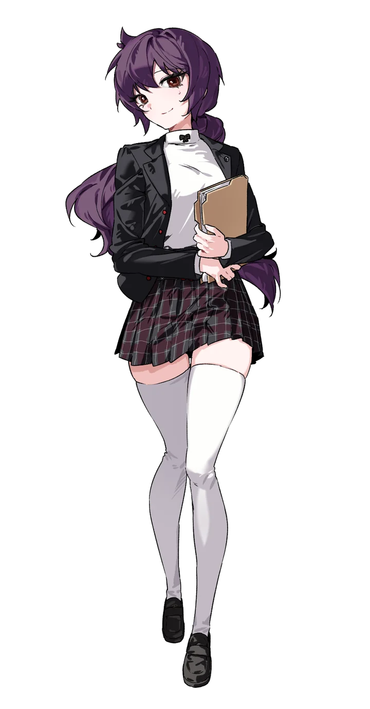 교복 차림 (© DAPHILL) 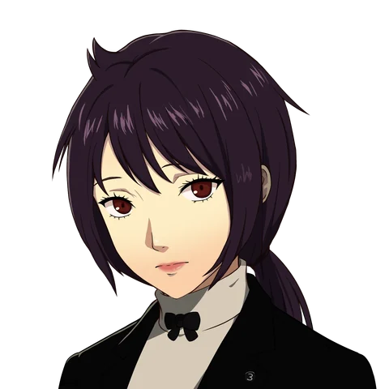 두상 일러스트 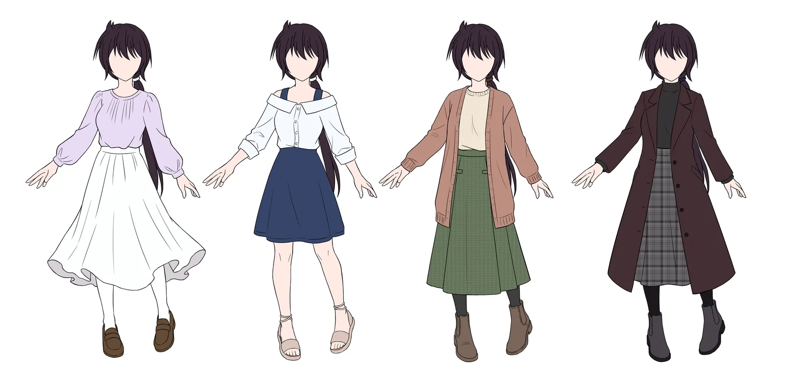 사복 모음 | |
| 이름 | 타키카와 시즈네 滝河 静音 |
|---|---|
| 애칭 | 즈네 |
| 소속 | 사립 슈진 학원 3학년 보건위원장 |
| 나이 | 18세 (2016년 기준) |
| 생일 | 1월 3일 |
| 신체 | 167cm |
| 아르카나 | 우물 (The Well)[1] |
| 이미지 컬러 | 검보라색 / 보라색 |
| 아르바이트 | 방과 후 병원 근무 |
| 관계 | |
| 짝사랑 | 마루키 타쿠토 (키 차이 15cm) |
| 관계명 | 보건실의 잡담 메이트 |
| 기타 | |
| 원작 | 페르소나 5 더 로열 (2차 창작) |
| 디자인 | 오너 OC |
1. 개요[편집]
이렇게 다가가도 괜찮을까. 그래도, 조금 더 용기 내고 싶어.— 타키카와 시즈네
페르소나 5 더 로열을 배경으로 한 2차 창작 드림 OC. 사립 슈진 학원 3학년이자 보건위원장으로, 다친 학생들을 치료해주고 방과 후에는 병원에서 일하는, 남을 돕는 일이 몸에 밴 학생이다.
4월의 투신 사건 이후 임시로 부임한 스쿨 카운슬러 마루키 타쿠토가 보건실을 상담 장소로 쓰게 되면서 매일같이 얼굴을 마주하게 되고, "모두를 행복하게 하기 위한 연구"를 하는 그에게 반해 폐가 되지 않도록 마음을 억누른 채 짝사랑 중이다. 그리고 마루키는 이미 눈치챘다[2]
마루키와의 커플링은 흔히 MZN(마즈네) 또는 T×S로 표기된다.
2. 특징[편집]
2.1. 외모[편집]
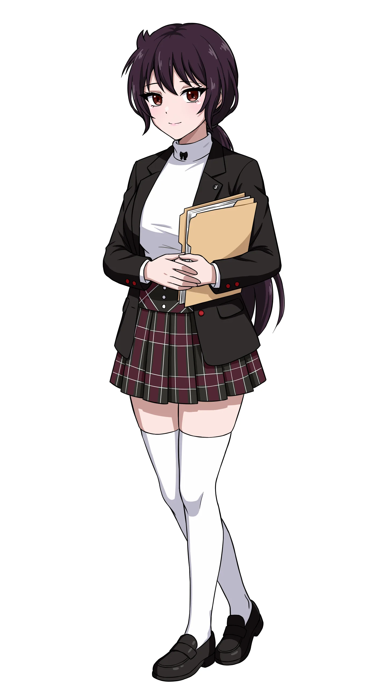
시즈네 전신- 검보라색 반곱슬 머리. 왼쪽 위로 삐죽 솟은 머리카락 두 가닥이 포인트.[3]
- 허리까지 내려오는 로우테일.
- 끝이 살짝 올라간 검붉은 눈과 속눈썹. 성숙하면서도 나름 귀여운 인상.
- 슬렌더 체형에 거유.
- 교복 재킷 카라에는 3학년을 뜻하는 "3" 뱃지를 달고 있다.
- 평소에는 무표정에 가깝지만, 마루키 앞에서만은 표정이 풀린다. 이른바
드림캐 한정 데레데레.
오너 지정 NG 해석
- 일자 눈
- 처진 인상
- 츤데레 성격
시즈네는 츤데레가 아니다. 무뚝뚝해 보일 뿐 말은 늘 다정하게 한다.
2.2. 성격[편집]
키워드는 차분함 · 세심함 · 헌신적.
조용한 일상을 바라면서도 보건위원장으로서 다친 학생들을 정성껏 치료해 주는 온화한 학생. 존재감은 옅은 편이라 학생들 사이에서는 "보건실에 늘 있는 그 선배" 정도로 인식된다. 특별한 존재를 동경하면서도 정작 자신은 앞으로 나아가지 못하는, 이른바 나데나데 여고생 마망.[4]
남을 돕는 데는 익숙하지만 자기 이야기는 좀처럼 꺼내지 않는다. 아픈 걸 참고 괜찮은 척 견디는 습관이 있는데, 팬사이트 인트로의 예고장 문구 "괜찮은 척 견뎌온 당신은 아픔을 참는 대죄를 저질렀다"가 바로 이 부분을 겨냥한 것이다.
2.3. 가정환경[편집]
부모의 무관심 속에서 사실상 방치된 채 자랐다. 집안에서 자신을 이름으로 불러주는 사람조차 없었으며, 이 때문에 훗날 마루키가 처음으로 "시즈네"라고 불러주었을 때 크게 기뻐한다. 본인은 이를 수치스럽게 여겨 숨기고 있었으나 각자의 사정 사건 때 마루키에게 들키게 된다.
3. 작중 행적[편집]
원작의 2016년 4월부터 이듬해까지를 6단계로 나눈다. 단계 이름은 공식 타임라인을 따랐다.
3.1. 카운슬러, 부임하다[편집]
2016년 4월 15일 (금). 스쿨 카운슬러 정식 부임 전, 상담 장소로 쓸 보건실을 소개받은 마루키가 방과 후 보건실에 남아 있던 시즈네를 만난다. 가볍게 통성명을 하며, 앞으로 보건실에서 볼 일이 잦을 테니 잘 부탁한다는 인사를 나눈다. 시즈네는 속으로 인기 많아 보이는 선생님이 오셨으니 조용한 보건실은 이제 끝이구나 하고 생각했다고.
5월 17일, 마루키가 정식으로 부임하며 두 사람은 연락처를 주고받는다.
3.2. 방관의 고백[편집]
5월 21일 (토). 학생들에게 피해를 입히고 떠난 체육교사 사건의 뒷수습으로 학생들을 상담하던 마루키는, 간접 피해자인 시즈네에게도 카운슬링을 권한다. 상담을 꺼리던 시즈네는 결국 배구부 학생들이 폭행당하는 걸 알면서도 외면한 자신은 방관자였다고 털어놓는다. 마루키는 그건 "그럴 수밖에 없던 현실"이었다며 위로하고, 이 배려를 계기로 시즈네는 마음을 열기 시작한다.
3.3. 행복을 위한 연구[편집]
5월 23일 (월). 여느 때처럼 점심시간에 보건실에 간 시즈네는 켜져 있던 마루키의 노트북에서 작성 중이던 논문을 읽게 된다. 자리를 비웠던 마루키가 돌아오자 몰래 읽은 것을 사과하지만, 마루키는 오히려 의견을 물어 온다. 흥미가 생겨 연구에 대해 묻는 시즈네에게 마루키는 "모두를 행복하게 하기 위한 연구"라고 답한다. 소소한 일상만 바라던 시즈네는 큰 뜻을 향한 그의 야망에 반하고 만다.
이 시기의 주요 일지
| 5/30 | 미화 활동 날, 돈지루를 함께 먹었다 |
| 6/3 | 마음을 자각한 밤, 검문을 당했다 |
| 6/5 | 백화점에서 우연히 만나 쿠키를 받았다 |
| 6/14 | 아마미야에게 이상형을 들켜버렸다 |
3.4. 각자의 사정[편집]
6월 25일 (토). 심한 감기로 보건실에서 쉬던 시즈네는 하교 시간이 지나도 몸이 나아지지 않았고, 폭우 탓에 차를 가져온 마루키가 집까지 데려다준다. 이 과정에서 방치된 가정환경을 들키게 된다.
마루키는 수치심을 느낄 시즈네를 배려해, 자신도 강도 사건으로 약혼자와 파혼하고 인지가학 연구에 몰두하게 된 과거를 털어놓는다. 그의 아픔을 알게 된 시즈네는 연구가 완성되어 그가 구원받기를 진심으로 바라며 연구를 돕기로 결심한다.
6월 27일, 시즈네가 집안 사정을 직접 이야기하면서 처음으로 이름으로 불리게 된다.
여름방학 일지
| 7/5 | 보건실 괴롭힘의 범인을 알게 됐다 |
| 7/19 | 진로 이야기를 하고 과자를 잔뜩 받았다 |
| 8/6 | 오다이바에서 사라진 연구소 터를 보았다 |
| 8/23 | 카페에서 함께 연구하며 디저트를 나눠 먹었다 |
3.5. 신뢰와 이별[편집]
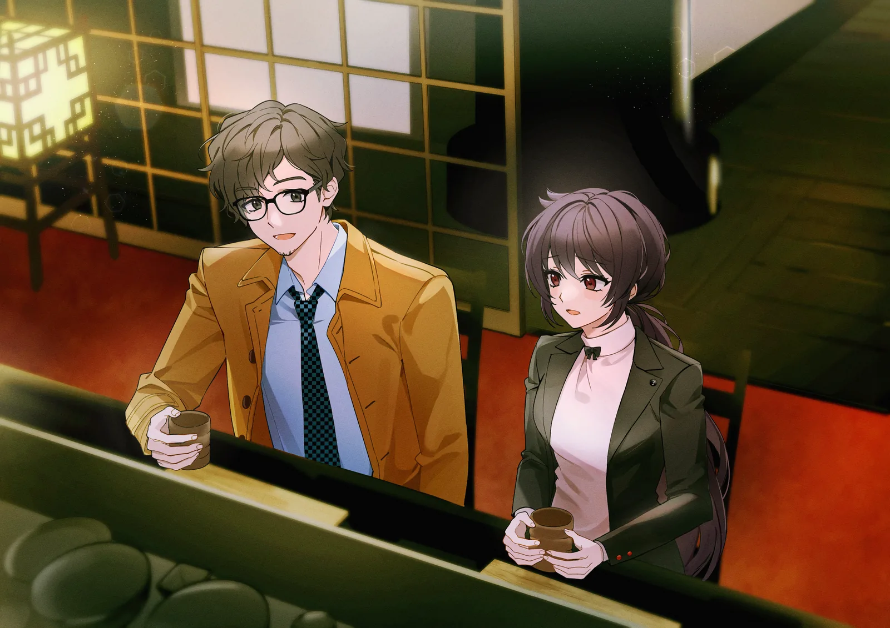
임기 종료 전날 (© 쿠지)11월 18일 (금). 보건실에서 잡담부터 연구까지 신뢰를 쌓아 온 나날이 지나고, 마루키의 상담교사 임기가 끝난다. 주인공과 시즈네의 도움으로 논문이 완성 단계에 이른 마루키는 떠나기 전 마지막으로 저녁을 대접하며 감사를 전한다.
시즈네는 자신의 처지와 마루키의 입장을 생각해 끝내 마음을 전하지 못한다. 그러나 반년 동안 가장 가까운 곳에서 그를 지지했던 만큼, 마루키의 인지세계 한켠에 그녀의 존재가 새겨진다.[5]
3.6. 3학기, 그 후[편집]
다음 해 여름. 대학생이 된 시즈네는 3학기의 어렴풋한 잔상을 핑계 삼아 마루키에게 연락하고, 졸업 후 첫 재회를 갖는다.
마루키는 자신이 저지른 일을 고백하며, 현실과 인지세계가 뒤섞이면서 기억에 영향이 남았을 것이라 추측한다. 하지만 3학기를 거치며 깨달음을 얻은 두 사람은 이 또한 마주하기로 한다. 그리고 시즈네는 마루키에게 한 걸음 더 다가갈 용기를 낸다.
더 이상 선생님이 아니게 된 마루키를 다시 "마루키 씨"라고 부르기 시작하며, 마루키 쪽도 "이런 마음으로 봐도 되는 걸까" 하고 곤란해하는 중이다. 곤란해하는 것치고는 별로 안 곤란해 보인다
4. 인간관계[편집]
4.1. 마루키 타쿠토[편집]
상세 내용은 마루키 타쿠토 문서 참고.
보건실에서 자주 마주치는 보건위원장과 상담교사. 사담을 자주 나누고, 시즈네가 마루키의 연구를 돕기도 한다. 자주 다쳐서 오는 마루키를 치료해 주는 것도 시즈네의 몫이다.[6]
마루키는 시즈네의 마음을 눈치챘지만 모르는 척해 주고 있으며, 본인도 모르는 사이 시즈네에게 깊은 신뢰와 안정감을 느끼고 있다.
| 처음 만났을 때 | 지금 | |
|---|---|---|
| 마루키 → 시즈네 | 조용하면서도 남들을 잘 돕고 책임감 있어 보이는 학생 | 모든 걸 털어놓으며 쉴 수 있는 따뜻한 안식처 |
| 시즈네 → 마루키 | 인기가 많을 것 같아서, 조용한 보건실은 끝이라 생각했던 사람 | 짐을 나눠 들고 곁에서 보듬어 드리고 싶은 다정한 분 |
관계 해석 시 주의사항
- 다정하게 이야기를 나누거나, 시즈네가 부끄러워하고 설레는 구도는 OK.
- 마루키 쪽이 과하게 치근덕거리는 묘사는 NG.
- 마루키는 상담교사이지 보건교사가 아니다. 즉 신체 치료는 하지 않는다. 치료는 시즈네 담당.
4.2. 아마미야[편집]
원작 주인공. 마루키의 연구를 함께 도운 학생으로, 6월 14일 시즈네의 이상형을 알아채 버린 장본인이기도 하다. 눈치가 너무 좋다
4.3. 부모[편집]
시즈네에게 무관심하다. 자세한 내용은 가정환경 항목 참고.
5. 호칭[편집]
| 시기 | 시즈네 → 마루키 | 마루키 → 시즈네 |
|---|---|---|
| 첫 만남 | 마루키 씨 | 타키카와 상 |
| 마음을 연 뒤 | 마루키 선생님 | 시즈네[7] |
| 졸업 후 | 마루키 씨 (더 이상 선생님이 아니니까) | 시즈네 |
6. 명대사[편집]
엄청 다정하고, 멋진 목표예요.— 마루키의 연구 목표를 들었을 때
저를 이름으로 불러준 사람이 없었어서, 기뻤어요.— 처음 이름으로 불린 뒤
더 가까이 가면 안될까요?— 졸업 후 재회에서
마루키 쪽 대사로는 다음이 유명하다.
시즈네가 잘못한 것도 없고, 그런 걸로 널 이상하게 생각하지도 않아.— 마루키 타쿠토
7. 갤러리[편집]
커미션 작품에는 작가 표기를 함께 달았다. 전체 갤러리는 팬사이트에서 볼 수 있다.
본편
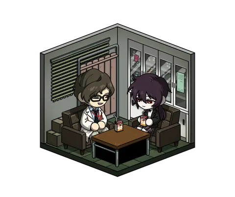
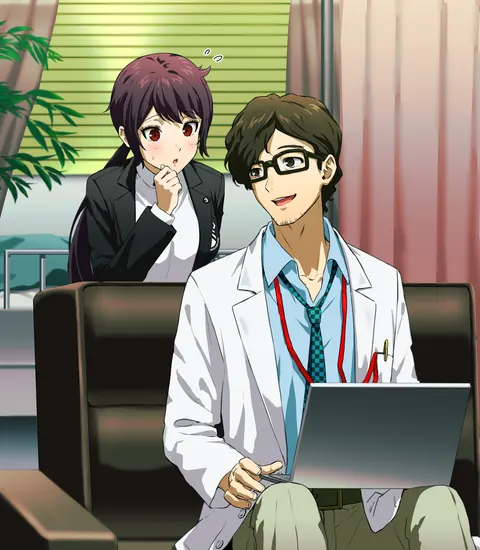
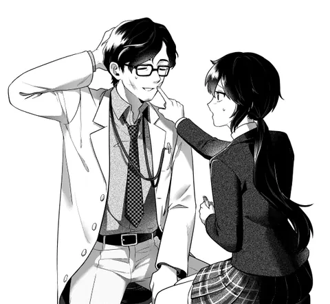
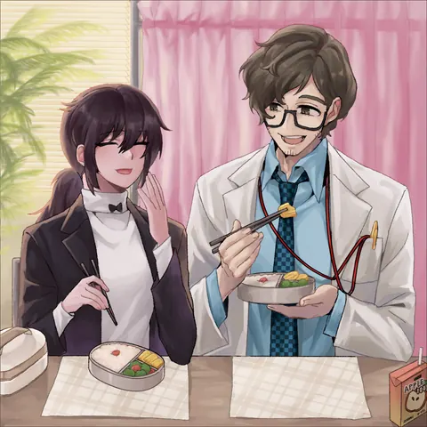
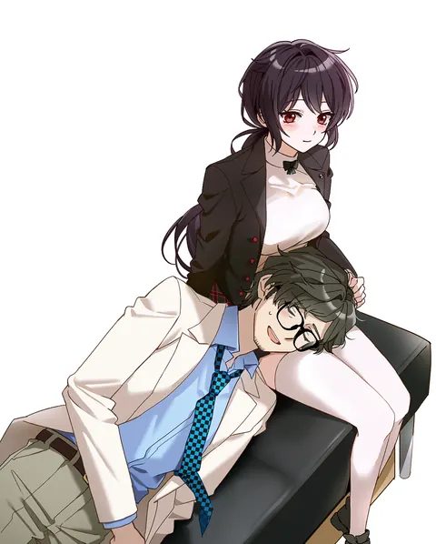
엔딩 후
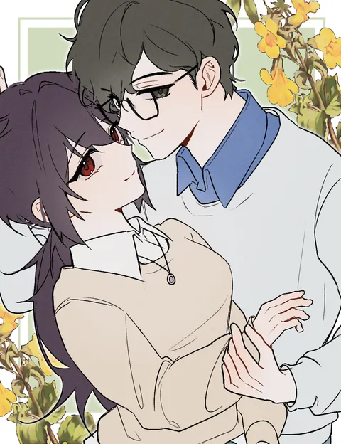
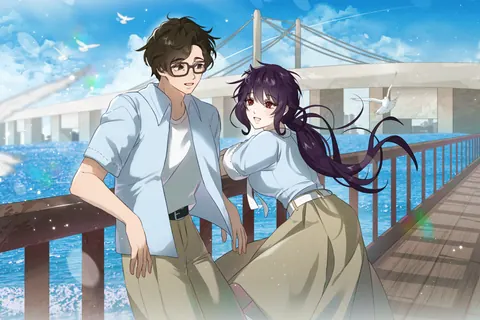
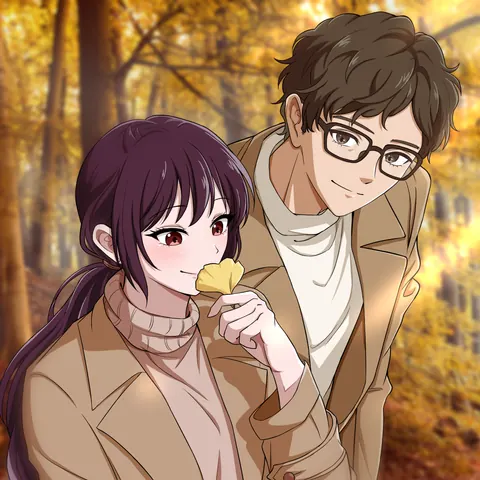
8. 여담[편집]
- 이름의 静音(시즈네)는 "고요한 소리"라는 뜻으로, 조용한 보건실을 좋아하는 성격과도 맞아떨어진다.
- 마루키(182cm)와의 키 차이는 15cm.
- 마루키의 이미지 컬러가 하늘색/흰색이라, 두 사람을 나란히 놓으면 하늘색과 검보라색이 대비를 이룬다. 공식 타임라인의 말풍선 색도 이를 따른다.
- 오너가 드림을 시작한 날은 2025년 1월 20일이다.
- 팬사이트 이름은 So Happy World. 입장 화면이 원작의 예고장을 패러디한 형식이며, 서명은 "사립슈진고교 보건실"이다.
- AU 설정이 상당히 많다. 빅밴드 AU, 집사와 메이드 AU, 사냥꾼과 빨간모자 AU 등이 있으며
마루키가 강아지가 되기도 한다.[8]